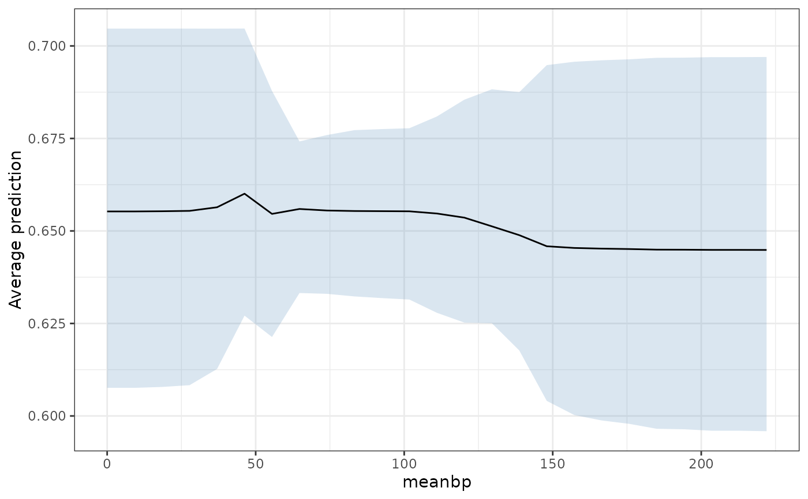
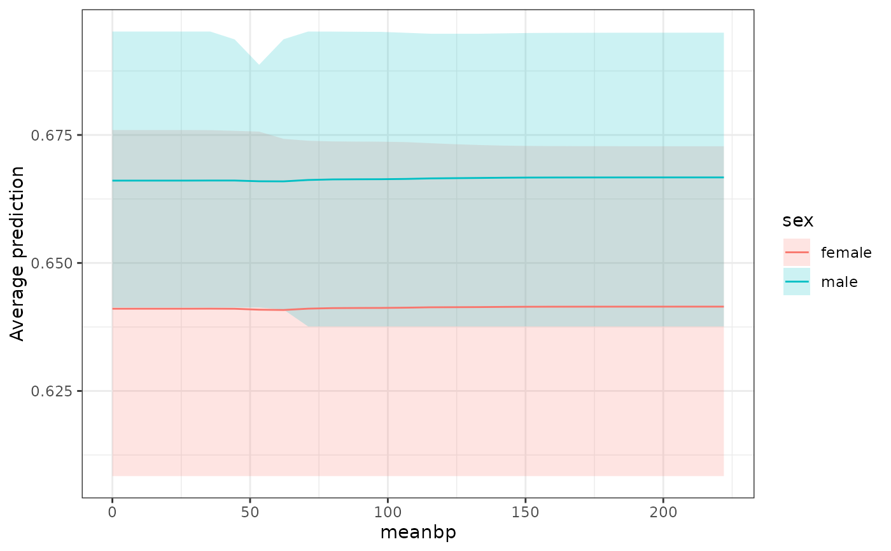

Averages the fitted surface over the sample at each value of one or two
predictors, so that what is left is how the prediction moves with them.
partial_dependence() returns the values and plot() draws them.
Usage
partial_dependence(
object,
variables,
newdata = NULL,
grid = 51L,
values = NULL,
level = 0.95,
type = "response",
plot = FALSE,
...
)
# S3 method for class 'bartisan_partial'
print(x, digits = 3L, ...)
# S3 method for class 'bartisan_partial'
plot(x, ...)
# S3 method for class 'bartisan_fit'
plot(x, y, ...)Arguments
- object
a
<bartisan_fit>object; the output of a call tobartisan().- variables
a one-sided formula naming one or two predictors, as in
~ ageor~ age + sex, or a character vector of their names.- newdata
optional; a data frame to average over. Default is the data the model was fit to.
- grid
integer; how many values of a numeric predictor to evaluate. Default is 51. A factor is evaluated at each of its levels whatever this is.- values
optional; a named list giving the values to evaluate a predictor at, which overrides
gridfor the predictors it names.- level
numeric; the level of the credible interval. Default is.95.- type
string; the prediction scale, passed topredict.bartisan_fit(). Default is"response".- plot
logical; whether to draw the result rather than return it. Default isFALSE.plot = TRUEcallsplot.bartisan_partial(), so the argument and the method cannot disagree.- ...
for
plot.bartisan_fit(), further arguments passed topartial_dependence(); forpartial_dependence(), further arguments passed topredict.bartisan_fit().- x
a
<bartisan_partial>object; the output of a call topartial_dependence(). Forplot.bartisan_fit(), a<bartisan_fit>.- digits
integer; forprint(), the number of significant digits to print the estimates and their interval to. Default is 3.- y
for
plot.bartisan_fit(), the predictors to plot, asvariablesabove.
Value
A <bartisan_partial> object, a data frame with one row per grid point,
columns for the predictors, and estimate, lower and upper. plot()
returns a ggplot2 object.
Details
At each grid value every unit is assigned that value, the prediction is taken for all of them, and the average over units is taken within each posterior draw. The interval is then a quantile of those averages, so it is an interval on the average prediction and not on any one unit's.
The usual caveat on a partial dependence plot applies. Averaging over the
other predictors evaluates the model at covariate combinations that may not
occur, so a curve over a region where the predictor's values are sparse says
more about the prior than about the data, and the result summarizes the fitted
function rather than supporting a causal claim; estimate_effect() is for a
contrast that is meant causally.
See also
estimate_effect() for treatment effects rather than fitted
surfaces; variable_importance() for which predictors the forest uses;
bartisan-marginaleffects, since
marginaleffects::plot_predictions()
draws the same thing with more
control over the grid
Examples
data("rhc")
set.seed(123)
fit <- bartisan(death ~ age + sex + meanbp + aps, data = rhc,
num_trees = 10, num_burn = 50, num_draws = 50,
verbose = FALSE)
#> ℹ Using `family = binomial()`.
#> ℹ Set `family` to choose another, which also silences this message.
# How the fitted risk moves with mean blood pressure
pd <- partial_dependence(fit, ~ meanbp)
pd
#> Partial dependence
#>
#> Predictor: "meanbp"
#> Averaged over 1500 units, on the
#> "response" scale
#>
#> meanbp estimate lower upper
#> 0.00 0.654 0.638 0.680
#> 4.44 0.654 0.638 0.680
#> 8.88 0.654 0.638 0.680
#> 13.32 0.654 0.638 0.680
#> 17.76 0.654 0.638 0.680
#> 22.20 0.654 0.638 0.680
#> 26.64 0.654 0.638 0.680
#> 31.08 0.654 0.638 0.680
#> 35.52 0.654 0.638 0.680
#> 39.96 0.654 0.638 0.680
#> 44.40 0.654 0.638 0.680
#> 48.84 0.654 0.638 0.680
#> 53.28 0.654 0.638 0.676
#> 57.72 0.654 0.638 0.674
#> 62.16 0.654 0.638 0.674
#> 66.60 0.654 0.638 0.678
#> 71.04 0.654 0.638 0.680
#> 75.48 0.654 0.638 0.680
#> 79.92 0.654 0.638 0.680
#> 84.36 0.654 0.638 0.679
#> 88.80 0.654 0.638 0.679
#> 93.24 0.654 0.638 0.679
#> 97.68 0.654 0.638 0.679
#> 102.12 0.654 0.638 0.679
#> 106.56 0.654 0.638 0.679
#> 111.00 0.654 0.638 0.679
#> 115.44 0.654 0.638 0.679
#> 119.88 0.654 0.638 0.679
#> 124.32 0.654 0.638 0.679
#> 128.76 0.654 0.638 0.679
#> 133.20 0.655 0.638 0.679
#> 137.64 0.655 0.638 0.679
#> 142.08 0.655 0.638 0.679
#> 146.52 0.655 0.638 0.679
#> 150.96 0.655 0.638 0.679
#> 155.40 0.655 0.638 0.679
#> 159.84 0.655 0.638 0.679
#> 164.28 0.655 0.638 0.679
#> 168.72 0.655 0.638 0.679
#> 173.16 0.655 0.638 0.679
#> 177.60 0.655 0.638 0.679
#> 182.04 0.655 0.638 0.679
#> 186.48 0.655 0.638 0.679
#> 190.92 0.655 0.638 0.679
#> 195.36 0.655 0.638 0.679
#> 199.80 0.655 0.638 0.679
#> 204.24 0.655 0.638 0.679
#> 208.68 0.655 0.638 0.679
#> 213.12 0.655 0.638 0.679
#> 217.56 0.655 0.638 0.679
#> 222.00 0.655 0.638 0.679
#>
#> ℹ lower and upper bound the 95% credible interval on the average prediction,
#> not on any one unit's.
plot(pd)
 # The same thing from the fit, which is what the `plot()` method is for
plot(fit, ~ meanbp)
# The same thing from the fit, which is what the `plot()` method is for
plot(fit, ~ meanbp)

# Two predictors, one of them a factor, which gives a curve per level
plot(fit, ~ meanbp + sex)
